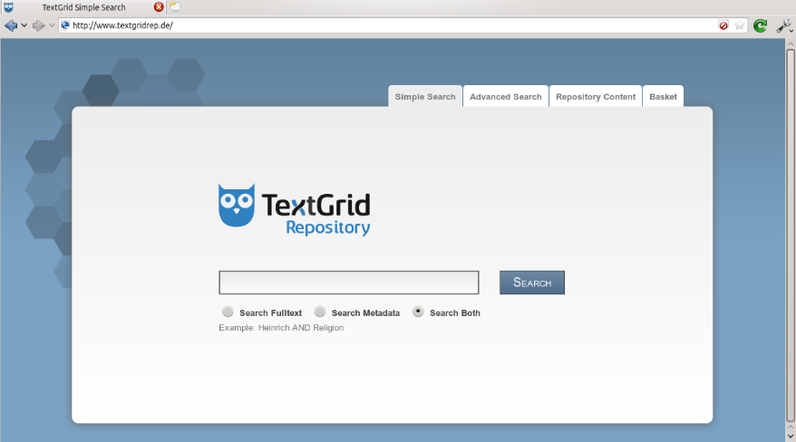

#DigLiGö15
grassroots dialouge, Göttingen, Apr 23 2015
Mathias Göbel

Dieses Werk ist lizenziert unter einer Creative Commons Namensnennung 4.0 International Lizenz.
Teil 2:
Korpusaufwertung
Stand der Dinge: (DTA)
Fauſt.
>p>Habe nun, ach! Philoſophie,
Juriſterey und Medicin,
Und leider auch Theologie!
Durchaus ſtudirt, mit heißem Bemuͤhn.
Stand der Dinge: TG
FAUST.
Habe nun, ach! Philosophie,
Juristerei und Medizin,
Und leider auch Theologie
Durchaus studiert, mit heißem Bemühn.
Korpus: TextGrid (textgridrep.de)
// genre:drama / tei:speaker/string()TEI: Sprecher im Drama:
[...]
Nathan.
[...]
[...]Was man tatsächlich findet:
eine kleine SammlungFehlerquellen
- übernommene Druckfehler
- OCR-Fehler
- Abkürzungen aus editorischen Gründen
- Inkonsistenzen bei der Sprecherangabe (“Odoardo” vs. “Odoardo Galotti”)
Diese Probleme zu lösen und damit das Korpus zu verbessern, ist eine eigentlich&tm; triviale Angelegenheit. Der Computer kann aber nur die Zeichenketten vergleichen und scheitert an dieser eigentlich&tm; einfachen Aufgabe.
Jetzt könnten wir uns an den Computer setzen und die XML-Dokumente selbst verbssern.


Wir lösen die Aufgabe mit einer GUI, die für uns leicht zu nutzen ist:
- im Browser
- auf verschiedenen Geräten
- eine einfache Abfolge durchlaufend
Gamification
Beispiele
Zooniverse oldweather.orgPunkte werden vergeben für:
- markierte is-Relationen
- für ausgewählte Aggregationen (“Alle”, “Beide” usw.)
- das Verifizieren der Eingaben anderer
- wenn ein Dokument als ‘done’ markiert wird
- ...
Wie sieht ein Netzwerk nun aus?
Nathan 1Visualization

Quelle: http://www.xkcd.com/688/